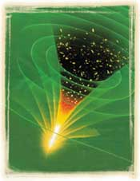

Göklerin
yaratýlýþý konusundan bahseden bir baþka ayet ise þöyledir:
“O
inkar edenler görmüyorlar mý ki, (baþlangýçta) göklerle yer,
birbiriyle
bitiþik iken, Biz onlarý ayýrdýk ve her canlý þeyi
sudan
yarattýk. Yine de onlar inanmayacaklar mý?„
(Enbiya Suresi, 30)
 Yukarýda temsili Big Bang resmi görülmektedir. Allah'ýn evreni yoktan var ettiðini bir kez daha ortaya koyan Big Bang, bilimsel delillerle ispatlanan bir teoridir. Bazý bilim adamlarý Big Bang'e alternatifler üretmeye çalýþýlmýþlar, ancak elde edilen deliller Big Bang'in bilim dünyasýnda kesin bir kabul görmesiyle sonuçlanmýþtýr. |
Ayetin
"birbiriyle bitiþik" olarak tercüme edilen "ratk" kelimesi, Arapça sözlüklerde
"birbiriyle içiçe, ayrýlmaz durumda, kaynaþmýþ" anlamlarýna gelir. Yani
tam bir bütün oluþturan iki maddeyi tanýmlamak için bu kelime kullanýlýr.
Ayette geçen "ayýrdýk" ifadesi ise Arapça "fatk" fiilidir ki, bu fiil "ratk"
halindeki bir nesneyi yarýp, parçalayýp dýþarý çýkmasý anlamýna gelir.
Örneðin tohumun filizlenerek topraktan dýþarý çýkmasý Arapça'da bu fiille
ifade edilir.
Þimdi ayete tekrar bakalým. Ayette göklerle yerin birbiriyle bitiþik yani "ratk" durumunda olduðu bir durumdan bahsediliyor. Ardýndan bu ikisi "fatk" fiili ile ayrýlýyorlar. Yani biri diðerini yararak dýþarý çýkýyor. Gerçekten de Big Bang'in ilk anýný hatýrladýðýmýzda, tek bir noktanýn evrenin tüm maddesini içerdiðini görüyoruz. Yani herþey, hatta henüz yaratýlmamýþ olan "gökler ve yer" bile bu noktanýn içinde, "ratk" halindeler. Ardýndan bu nokta þiddetle patlýyor ve bu yolla maddeler "fatk" oluyorlar… Ayette geçen ifadeleri bilimsel bulgularla karþýlaþtýrdýðýmýzda tam bir uyum içinde olduklarýný görüyoruz. 14 asýr önce haber verilmiþ olan bu bulgularýn bilimsel olarak ortaya konmasý ise ancak 20. yüzyýlda mümkün olmuþtur. |